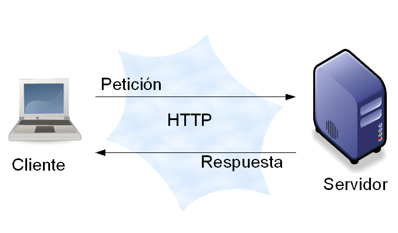

Arquitectura de desarrollo Web Cliente-Servidor
Que es un paradicma de programacion
Un paradigma de programación es un estilo, enfoque o metodología fundamental para estructurar y resolver problemas mediante código. Define la filosofía de cómo el programador conceptualiza la lógica del software y cómo el lenguaje gestiona las acciones, clasificándose principalmente en imperativos (cómo hacerlo) y declarativos (qué hacer).
Tipos de paradigmas de programacion
Paradigma Imperativo:
-
Orientado a Objetos (POO): Organiza el software alrededor de "objetos" que agrupan datos (atributos) y comportamientos (métodos), facilitando la reutilización y modularidad.
-
Procedural/Estructurado: Se basa en secuencias lineales de comandos, sentencias y bloques de control (if, loops) para cambiar el estado deProcedural/Estructurado: la memoria.
-
Lógico: Basado en la lógica de predicados, donde el programa consta de hechos y reglas para deducir soluciones (ej. Prolog).
-
Funcional: Se basa en el uso de funciones matemáticas puras, evitando efectos secundarios y cambios de estado. Ideal para concurrencia y cálculos complejos.
Paradigma Declarativo:
-
Funcional: Se basa en el uso de funciones matemáticas puras, evitando efectos secundarios y cambios de estado. Ideal para concurrencia y cálculos complejos.
-
Lógico: Basado en la lógica de predicados, donde el programa consta de hechos y reglas para deducir soluciones (ej. Prolog).
Otros Paradigmas:
-
Basado en Eventos: El flujo del programa está determinado por acciones del usuario (clics, pulsaciones) o mensajes de otros programas.
-
Concurrente: Divide un programa en múltiples tareas que se ejecutan simultáneamente.
Conceptos basicos de cliente-servidor
El modelo cliente-servidor es la arquitectura básica que permite la comunicación en redes (como Internet). Se basa en la división de tareas entre quienes solicitan recursos y quienes los proveen.
-
Cliente: Es el dispositivo o aplicación que inicia una petición de servicio (ejemplo: tu navegador web o una aplicación móvil).
-
Servidor: Es una máquina o programa potente que espera peticiones, las procesa y entrega una respuesta (ejemplo: los servidores de Google o Amazon).
-
Petición (Request): El mensaje que envía el cliente solicitando algo (una web, un archivo, un dato).
-
Respuesta (Response): El mensaje que devuelve el servidor con la información solicitada o un error.

Arquitectura de 3 capas: Datos, Negocio y Presentacion:
-
La Capa de datos: Es el mensaje que devuelve el servidor con la información solicitada o un error.
-
La Capa de Negocio: Actúa como el núcleo o "cerebro" del sistema, situándose entre la presentación y los datos. Aquí es donde se definen todas las reglas, algoritmos y validaciones que hacen que la aplicación funcione según lo planeado. Recibe las peticiones del usuario, procesa la información aplicando la lógica necesaria y decide qué datos deben ser consultados o guardados, funcionando como el motor que mueve toda la operación.
-
La Capa de Datos: Es la encargada de la persistencia y gestión de la información en el sistema. Su responsabilidad exclusiva es almacenar, recuperar y actualizar los datos en una base de datos o sistema de archivos de forma segura y eficiente. Esta capa no conoce las reglas del negocio ni cómo se ve la interfaz; simplemente responde a las órdenes de la capa de negocio para entregar o guardar la información solicitada de manera organizada.
Creacion y configuracion de un sitio web:
La creacisón de un sitio web comienza con el entendimiento de que este es, en esencia, un conjunto de archivos digitales alojados en una computadora conectada permanentemente a la red, llamada servidor. Para que este contenido sea accesible, se requiere de un Hosting (alojamiento), que es el espacio físico o virtual donde residen los datos, y un Dominio, que funciona como la dirección legible (ej. google.com) que apunta a la dirección IP técnica de dicho servidor.
La configuración inicial implica vincular estos dos elementos mediante los DNS (Sistema de Nombres de Dominio), que actúan como un directorio que traduce el nombre del dominio en la ubicación exacta del servidor. Una vez establecida la conexión, el servidor se encarga de procesar las peticiones de los usuarios y enviar los archivos correspondientes al navegador del cliente, donde se interpretan para mostrar la interfaz visual.
Componentes clave
-
Servidor Web: Software (como Apache o Nginx) que gestiona el tráfico y entrega los archivos al usuario.
-
Servidor Web: Software (como Apache o Nginx) que gestiona el tráfico y entrega los archivos al usuario.
-
Protocolo HTTP/HTTPS: El lenguaje de comunicación que permite la transferencia segura de datos entre el navegador y el servidor.
-
Base de Datos Estructura opcional para almacenar información dinámica, como perfiles de usuario o inventarios.